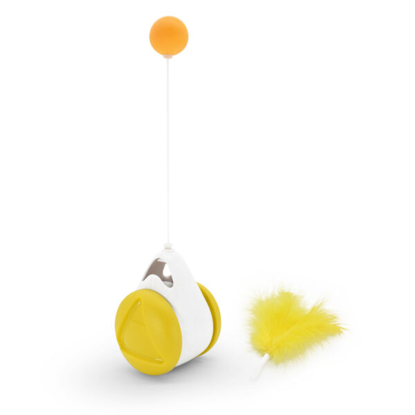

Juguete de agilidad
Desde $28,000
.Los juguetes interactivos pueden reducir la ansiedad cuando los gatos no están acompañados en casa.
La interacción se genera a través de la rueda de equilibrio del juguete y este, es un tipo de entrenamiento de agilidad que puede estimular el instinto de caza del gato,
desarrollar la inteligencia y la habilidad motriz.
.¡Múltiples formas de jugar! el juguete equilibrado puede balancearse verticalmente en un ángulo 180° en pie o una rotación horizontal de 360°,
lo que hace muy divertido para su mascota.
.Diseño superior: la pelota y la pluma son intercambiables y se ajustan en el cuerpo principal del juguete (no se pueden usar juntos).
Estos se pueden agitar libremente de un lado al otro y las piezas nunca se caerán.
.No requiere baterías, es ligero y cómodo de usar, no produce ruido,
y no afecta el tiempo de descanso del propietario.
.Medidas aproximadas: Ancho (cuerpo principal): 6,3cm – Largo (cuerpo principal): 8,2 cm.
.Precaución: Siempre supervisar el juego de tu mascota y detectar el tamaño y juguete ideal con el fin de evitar asfixia u otros daños.
Inspeccione este juguete con regularidad. No es un juguete para niños.